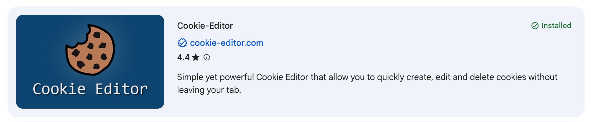
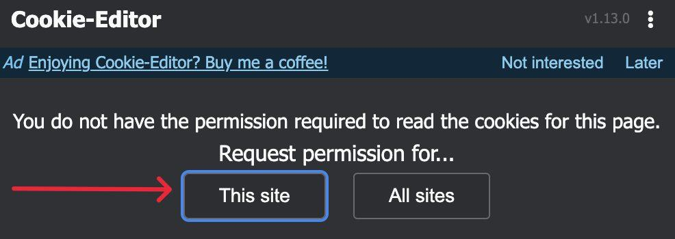
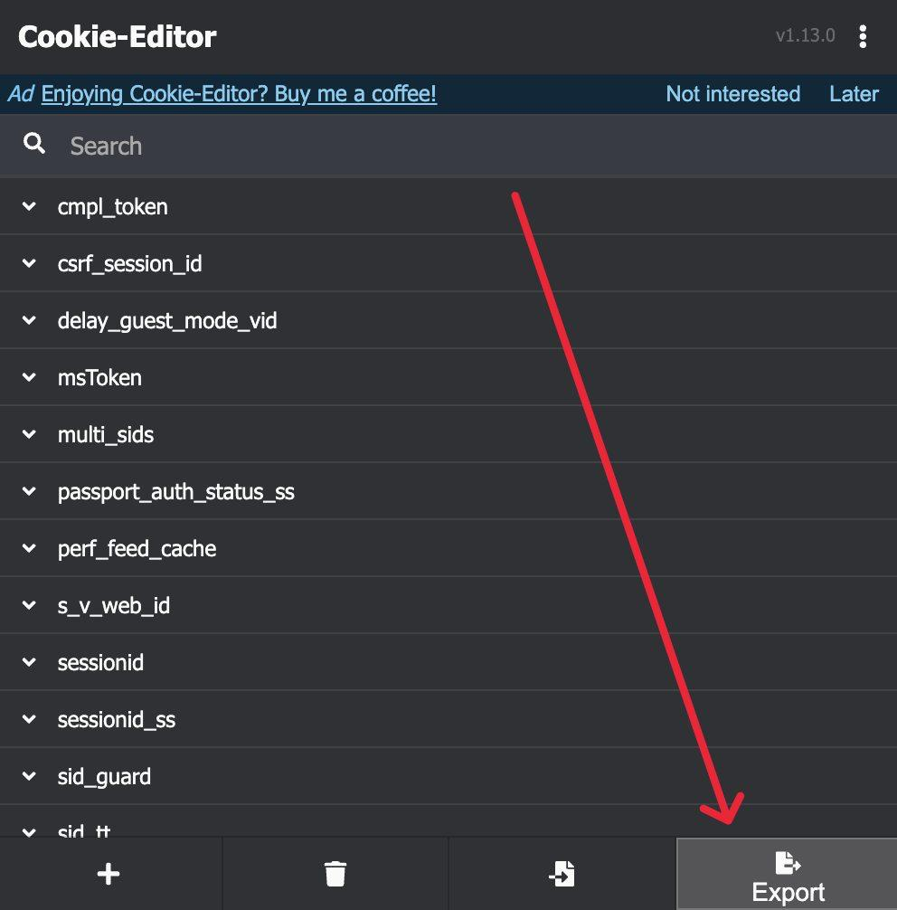

0 comments
Comments from your post show up here.
Checking your saved login.
Bob deletes comments as you, so it needs the login from your browser. Follow the three steps on the right, then drop or paste it below.
Drag your cookie file here
or press Ctrl V to paste it
Your login is saved in this folder on your computer. It is only ever sent to TikTok.
Open one of your posts on TikTok, copy its link and paste it here. Video links, photo links and short share links all work.
Nothing is deleted yet. You get to look at everything first.
Bob reads slowly on purpose so TikTok does not block it. Busy posts take a few minutes.
Deleted comments cannot be brought back.
Comments are removed a few seconds apart. You can stop at any time and carry on later.
Open the post on TikTok and check that they are gone. New bots can show up later, so scan again whenever you like.
0 comments
Comments from your post show up here.
A free Chrome extension that can copy your login. Open it in the Chrome Web Store and press Add to Chrome.

Log in on tiktok.com. Click the Cookie-Editor icon next to the address bar and choose This site.

Click the icon again, press Export in the bottom corner, then JSON. Your login is now copied. Come back here and press Ctrl V.
